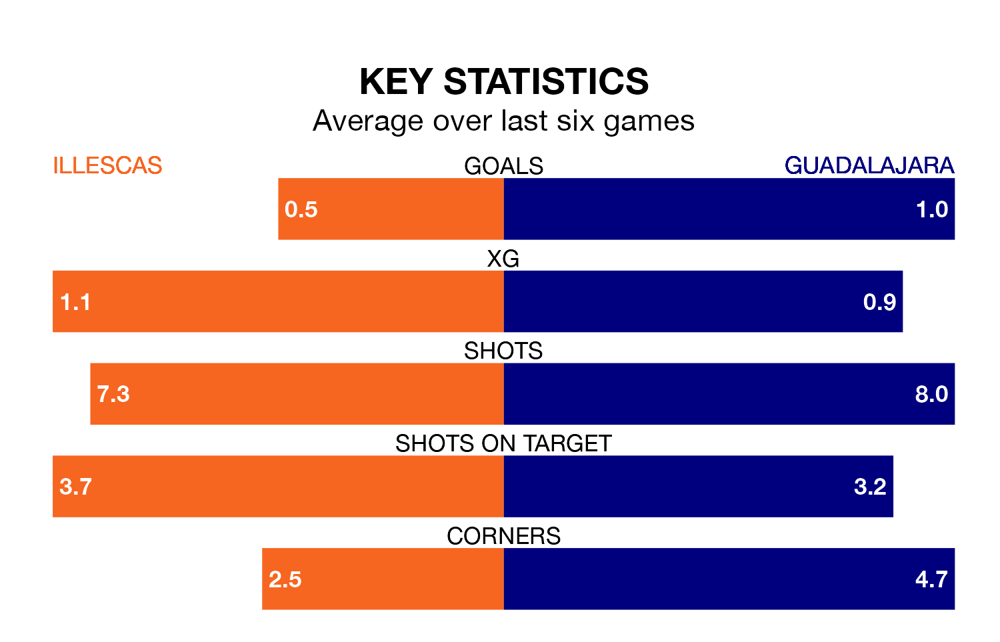

Guadalajara face a challenge to maintain their high-scoring form away against a tight Illescas defence on Sunday.
With 35 goals in 27 games, Guadalajara are the fourth-highest scorers in the Segunda División RFEF Group 5 ahead of the 11am kick-off at Estadio Municipal de Illescas.
They face an Illescas side who have scored 30 in 28 matches, but conceded only 24 goals, putting them joint-fourth among the league's tightest defences – only SS Reyes, Atlético Paso and Talavera CF have conceded fewer goals.
In the last 10 years, Illescas and Guadalajara have played each other on eight occasions. Illescas won three of them and Guadalajara five.
On average, Illescas scored 1.2 goals and Guadalajara 2.1 in those matches.
Their last meeting was on November 19, when Illescas won 2-1 away.
Illescas are in disappointing form in the Segunda División RFEF Group 5, with one win and two draws from their last six games.
With three wins and a draw over that period, Guadalajara's form is better – they have taken 10 points from 18, compared to the home team's five.
Illescas are sixth in the table after 28 games, of which they have won 11 and drawn nine, earning 42 points.
The visitors are four places behind Illescas in 10th, with 11 wins and four draws putting them on 37 points.
Illescas's last match was on Sunday, a 2-0 loss against AD Unión Adarve.
Guadalajara beat Atlético Paso 3-1 last time out, also on March 24, with Ricardo De Souza Rojas (two) and Iván Moreno Rodríguez on the scoresheet.
Updated: 12:39 (UTC), 26/03/24